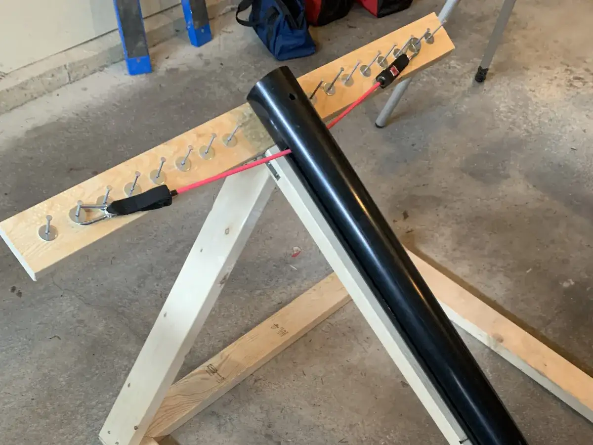
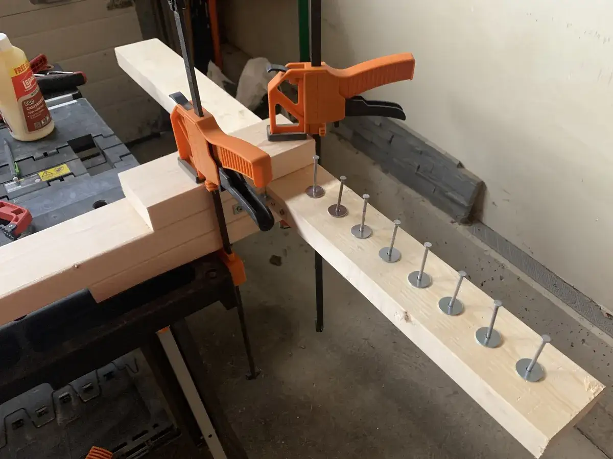
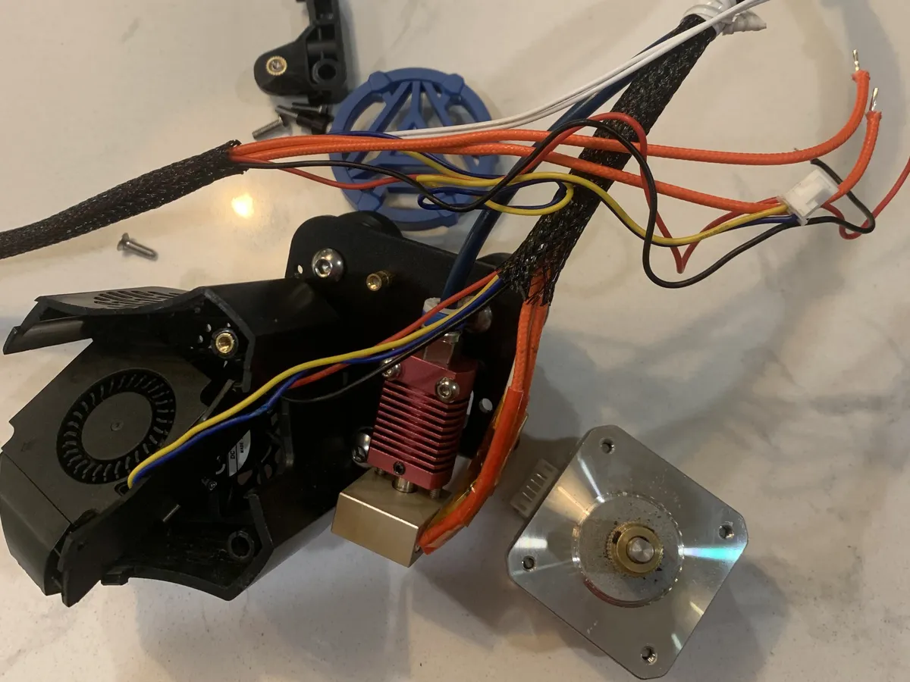
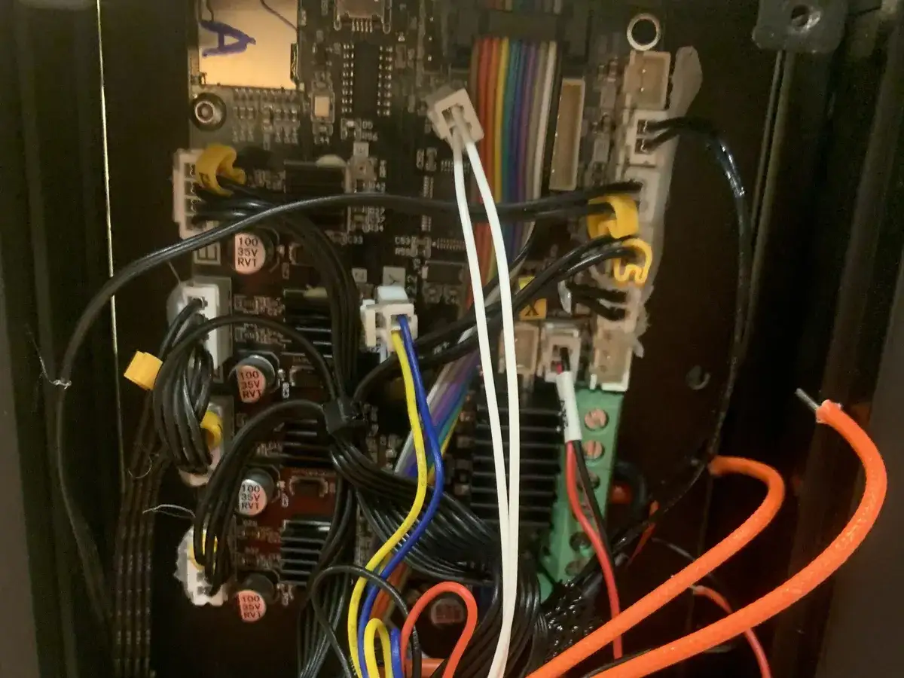
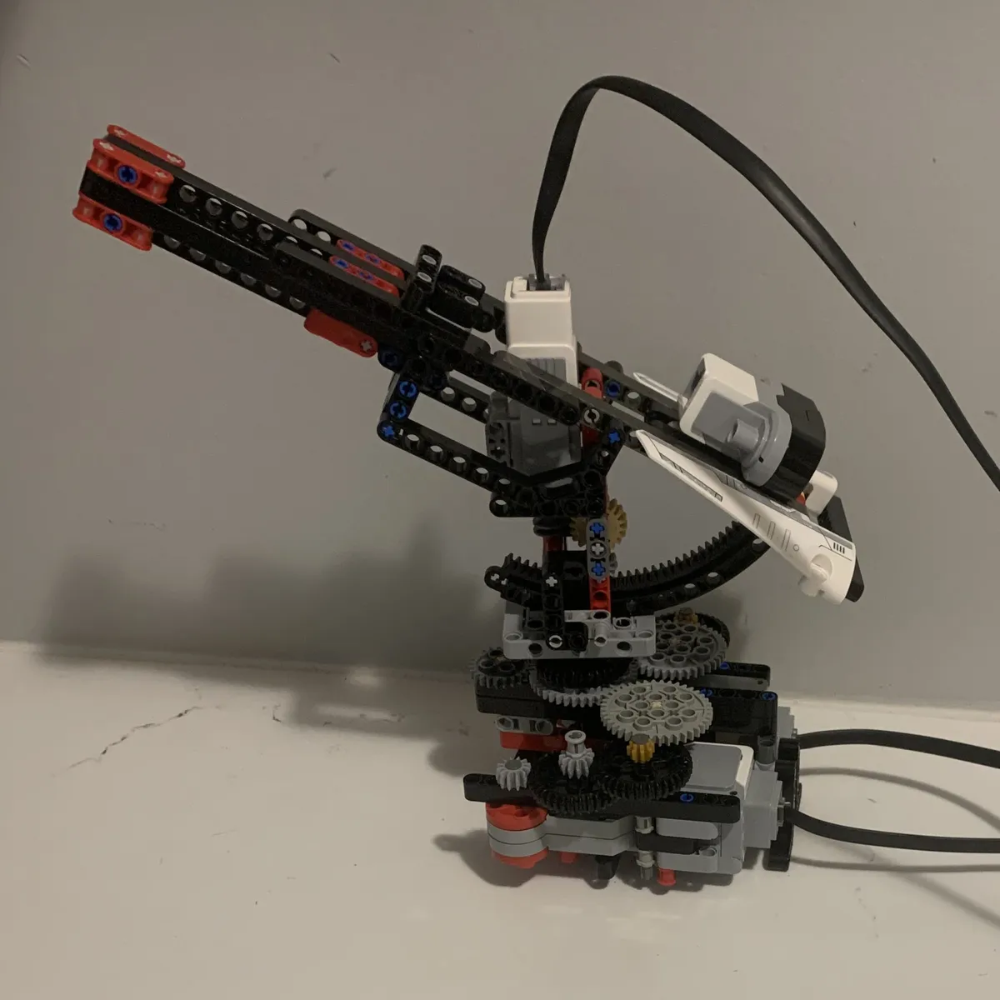
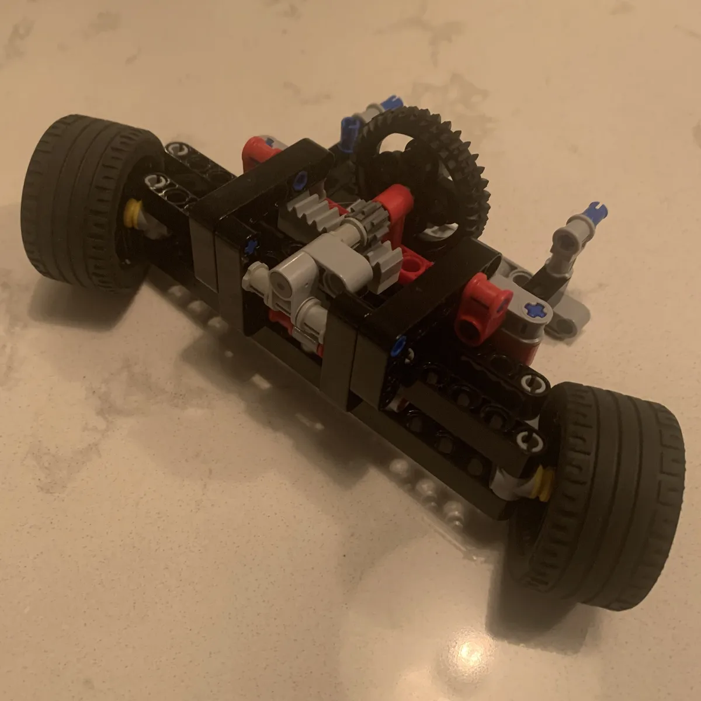
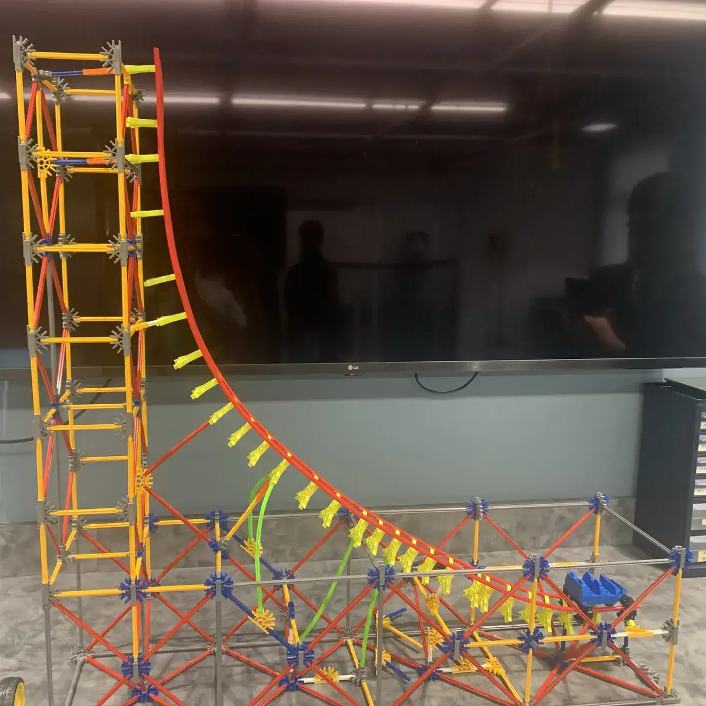

Additional Projects
A collection of smaller builds, mechanism experiments, and hardware iterations that round out my physical prototyping, troubleshooting, and design experience.
Core Prototyping
Featured Prototyping Projects
Larger, more complete systems involving design notebooks, custom wiring, structural fabrication, and target testing.


Kinematics & Woodworking
Projectile Ballista Launcher
This project was completed as part of a physics class challenge. The objective was to design and build a tennis ball launcher that could accurately launch a projectile into a small target bucket at a specific distance using only elastic potential and mechanical energy. The design was constrained to fit within a 1m x 1m x 1m space, utilizing readily available materials.
We chose a ballista-style launcher, utilizing standard 2x4 lumber for the frame, a gate hook release trigger mechanism, and adjustable peg slots along the crossbar to control the elastic band tension. For the elastic component, we used an exercise band run through a PVC guide pipe to center and fire the tennis ball.
During testing, we encountered challenges with firing distance degradation as the guiding tape wore away. We resolved this by introducing a small PVC "scoop" to cradle the projectile. In the final target competition, our ballista performed exceptionally well, consistently launching projectiles over 25 meters with high structural stability.


Additive Manufacturing & Repair
3D Printer Customization
I’ve owned a 3D printer for several years, and while I’ve had occasional minor issues, nothing major had happened until the extruder/thermistor failed, rendering the printer unusable. After trying multiple fixes, I decided to replace the extruder/hot end assembly entirely and upgraded to a new model.
This process took quite a bit of time, as I had to combine some existing components with the new model and rewire part of the motherboard. Unfortunately, some of the parts I received were broken, forcing me to improvise by using old parts with the new ones. Despite the setbacks, I successfully resolved the issue and got the printer back in working order.
Experiments & Small Mechanisms
Short Studies & Incomplete Work
A gallery of focused mechanism builds, steering prototypes, and velocity models.


